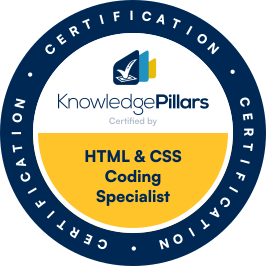
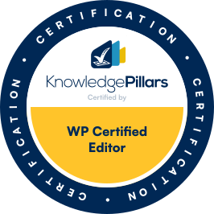

I’m Sean Gagne, based in Manatee County, Florida. I’m a small business owner and the founder of Tech Assist For Seniors, where I help older adults learn how to use their phones, computers, and smart devices. I enjoy troubleshooting, solving real-world problems, and teaching in a way that makes technology feel less intimidating.
Outside of work, I enjoy online games and exploring new ways to use technology. Over time, I’ve started using AI tools to make my work more creative and efficient. I use AI to build content for my website, create easy-to-understand slides and handouts for clients, and test new ideas.
One of my favorite projects is a tool I built using the OpenAI API and VS Code. It automates blog writing and uploads the articles straight into my WordPress drafts. Projects like this let me mix what I’ve learned about web design, automation, and AI to make real tasks easier for myself and the people I help.


I’ve always enjoyed learning how things work and finding practical ways to make them better. That curiosity led me into technology, where I can combine creativity, problem-solving, and design to create real solutions that help people and organizations succeed.
Through hands-on projects, I’ve learned how to design clean, accessible websites using HTML, CSS, and WordPress. I’ve also gained a strong understanding of how search optimization, good structure, and user experience come together to make a site both functional and engaging. Each new project has helped me become more confident in planning, building, and improving digital experiences.
I value clear communication, patience, and attention to detail. I take time to understand the problem before jumping into the solution. My process often starts with research and planning, followed by design, testing, and improvement. This approach helps me stay organized and deliver work that’s both polished and practical.
I’m currently focused on improving my front-end development skills and exploring how automation and AI can simplify repetitive tasks. By combining technical ability with creativity and empathy, I hope to continue growing into roles that connect technology with real human needs.
I started by building simple WordPress sites and testing how layout and wording affect results. That led me to learn HTML and CSS, try Bootstrap, and study the basics of search. As I grew more confident, I added small JavaScript features and focused on making pages clear, fast, and easy to use.
These projects taught me to plan first, build in steps, and keep improving based on what users need.
I’m building a solid foundation through hands-on projects and structured coursework. I practice core web skills, learn modern tools, and apply what I learn to small, real tasks. My goal is steady growth, clear communication, and reliable results on the job.
Learn how I got started and what I am building next.